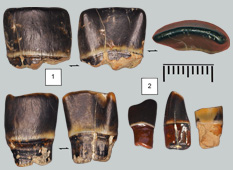
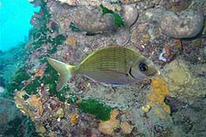

|
  |
||
 |
|
||
|
En forme de gouge 
La grosse espèce et la petite espèce... Dans les faluns on retrouve régulièrement la grosse espèce de sargue Diplodus jomnitanus. Les dents retrouvées sont des dents assez typiques en forme de gouge. On notera encore une fois la différence de taille entre les dents datant du Langhien (2) et celles du Serravalien (1).
Mais il existe aussi une petite forme avec des dents longues en forme de pelle. Cette espèce a été référencée sous le nom Diplodus aff. Cervinus, à cause de la forme caractéristique des dents qui rappelle l'espèce actuelle. Elle n'est pas forcément rare mais les dents sont tellement petites qu'elles ne sont pratiquement pas retrouvées.
Les sargues actuelles  La sargue est hermaphrodite, elle naît mâle puis se transforme en femelle.C’est un poisson agressif et vorace. C’est un prédateur qui recherche des moules, des oursins des petits poissons, des crustacés, des calamars ou des poulpes… Ses dents de devant ne sont pas très spécialisées mais sont à la fois solides pour s’adapter à la dureté des proies à coquilles et relativement coupantes pour manger les chairs tendres des proies sans coquille. |
|||